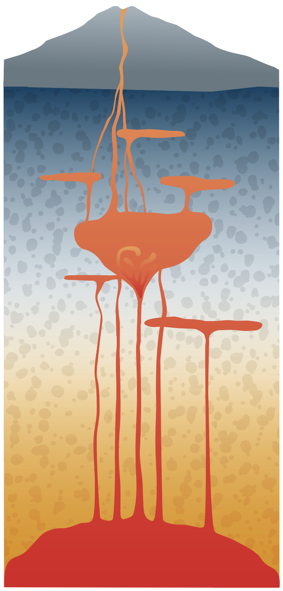
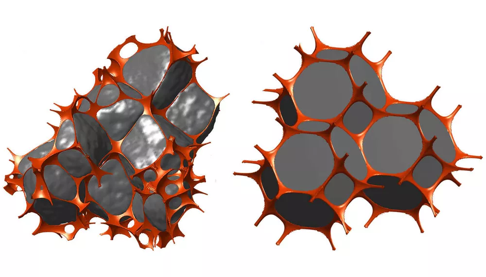
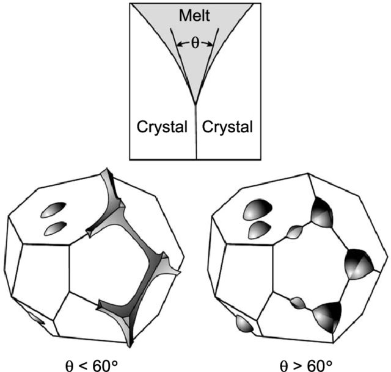

| Temps | Contenu | Objectif |
|---|---|---|
| 0-40 min | La migration et le stockage des magmas | Intégrer les différentes échelles et modes de transport et de stockage des magmas |
| 40-45 min | Questions générales | |
| 45-60 min | Pause | |
| 60-100 min | L’évolution géochimique des magmas | Comprendre les différents processus d’évolution des magmas |
| 100-105 min | Questions générales |
Les premières gouttes de magma formé sont primitives
Ce genre de composition magmatique primitif est très rare, voire inexistant dans les roches magmatique. Toute une série de processus va venir modifier cette composotion primitive pour donner des roches magmatiques de différentes natures. On appelle ça la différenciation.
Comment un liquide produit en profondeur peut-il se déplacer ?
Le transport dépend de la géométrie du réseau poreux, de la flottabilité, de la viscosité du magma et de la capacité de l’encaissant à se déformer ou à se fracturer.
| Échelle | Structure dominante | Processus principal |
|---|---|---|
| micromètres à millimètres | joints de grains et pores | percolation et compaction |
| centimètres à mètres | veines et fractures | concentration et canalisation |
| mètres à kilomètres | diapirs, dykes, et sills | propagation et transport advectif |
| kilomètres | réservoirs et mushs | stockage, cristallisation, mélange et dégazage |
Le passage d’une échelle à l’autre dépend de la capacité du magma à concentrer la déformation et à modifier son environnement.
Force motrice
La flottabilité dépend du contraste entre la densité de l’encaissant et celle du magma :
\[\Delta\rho = \rho_{\text{encaissant}} - \rho_{\text{magma}}\]
Si \(\Delta\rho > 0\), le magma possède une tendance à remonter.
Résistances

Un liquide entre les cristaux
Paramètres importants

Percolation
Extraction
L’angle dièdre \(\theta\) décrit la géométrie du liquide à l’intersection de trois joints de grains.
| Géométrie idéale | Conséquence sur la migration |
|---|---|
| \(\theta < 60^\circ\) | le liquide peut former un réseau interconnecté à faible fraction fondue |
| \(\theta > 60^\circ\) | le liquide tend à former des poches isolées ; une fraction critique est nécessaire pour connecter le réseau |
| Déformation ou réaction | la géométrie peut s’éloigner de l’équilibre textural et modifier la connectivité |
La tension interfaciale contrôle la forme du liquide, tandis que la viscosité contrôle la vitesse à laquelle il se déplace. Ces deux propriétés ne jouent pas le même rôle.

Un diapir est une masse moins dense qui remonte en déformant progressivement un encaissant suffisamment ductile.
Le diapirisme convient aux milieux ductiles. Une croûte froide et cassante favorise davantage la fracturation et la propagation de filons.
Dykes
Sills
Le terme « chambre magmatique » ne décrit pas nécessairement une grande cavité remplie de liquide. Un système magmatique peut être :
Le stockage donne du temps pour la cristallisation, le mélange, l’assimilation et le dégazage.
Connectivité+Flottabilité+Déformation→Transport→Stockage
À petite échelle, la géométrie des joints de grains contrôle l’extraction. À grande échelle, le magma choisit ou crée des chemins selon sa densité, sa viscosité et la résistance de l’encaissant. Les réservoirs sont des systèmes dynamiques, souvent partiellement cristallisés.
Deux magmas peuvent se rencontrer dans un dyke, un sill, un réservoir ou un conduit. Leur interaction dépend de leurs températures, compositions, viscosités, teneurs en cristaux et teneurs en volatils.
La géométrie de la rencontre est physique. L’homogénéisation finale est chimique. Ces deux étapes ne sont pas nécessairement simultanées.
Mingling
Mixing
Le mingling est d’autant plus efficace que les deux magmas peuvent se déformer ensemble.
Le mixing nécessite d’abord de créer une grande surface de contact entre les deux magmas, puis de réduire les gradients chimiques par diffusion, advection et déformation.
Un magma peut être fortement minglé sans être chimiquement homogène. Les textures et la géochimie doivent donc être interprétées ensemble.
Pour un élément conservatif qui ne réagit pas entre les deux magmas :
\[C_{\text{mélange}} = f C_A + (1-f) C_B\]
Pour un système isotopique, il faut mélanger les quantités d’éléments concernés avant de calculer le rapport isotopique. Le mélange de deux rapports n’est pas toujours une simple moyenne arithmétique.
Exemple numérique
Deux magmas contiennent respectivement 100 et 20 ppm d’un élément conservatif.
| Fraction de A | Concentration du mélange |
|---|---|
| 0 % | 20 ppm |
| 25 % | 40 ppm |
| 50 % | 60 ppm |
| 75 % | 80 ppm |
| 100 % | 100 ppm |
Lecture pétrologique
Une tendance linéaire peut suggérer un mélange, mais elle doit être confrontée aux textures et aux éléments utilisés.
Indices pétrographiques
Indices géochimiques
Le magma échange de la chaleur et de la matière avec les roches encaissantes. Ces échanges peuvent modifier sa température, sa composition, sa viscosité et sa densité.
Magma chaud→Transfert de chaleur→Fusion ou dissolution de l’encaissant→Magma contaminé
La contamination désigne la modification de la composition du magma par l’ajout d’une composante externe.
Une anomalie géochimique ne prouve pas à elle seule une assimilation : une source hétérogène ou un mélange de magmas peuvent produire une signature comparable.
Assimilation
Assimilation et cristallisation fractionnée
Le modèle AFC (Assimilation and Fractional Crystallization) décrit une situation où le magma assimile l’encaissant pendant que des cristaux se séparent.
Le liquide reçoit une composante crustale et perd une partie des éléments incorporés dans les cristaux.
L’efficacité de la contamination augmente généralement avec la quantité de matière pouvant être échangée et avec le temps disponible pour l’échange.
Au contact
Signatures attendues
| Terme | Ce qu’il décrit | Exemple |
|---|---|---|
| Mingling | dispersion mécanique incomplète entre magmas | enclaves et filaments mafiques |
| Mixing | homogénéisation chimique entre magmas | liquide hybride |
| Assimilation | incorporation de matière de l’encaissant | fusion partielle d’un granite par un basalte chaud |
| Contamination | modification chimique résultante | signature crustale dans le magma |
| AFC | assimilation couplée à la cristallisation fractionnée | magma qui assimile et cristallise dans un réservoir |
La cristallisation peut différencier un magma même sans apport externe. Lorsque des cristaux se forment puis se séparent du liquide, la composition du liquide résiduel évolue progressivement.
Refroidissement→Nouveaux cristaux→Séparation des phases→Liquide résiduel différencié
La cristallisation fractionnée est un modèle idéal de différenciation par séparation de phases. Les magmas naturels restent des systèmes ouverts et dynamiques.
Les phases
Les variables
Ces variables contrôlent les phases stables, leurs proportions et leurs compositions.
Un magma commence à cristalliser lorsque sa trajectoire atteint son liquidus. Cette trajectoire peut changer sous l’effet de :
La cristallisation modifie à son tour la composition, la densité, la viscosité et la teneur en volatils du système.
Nucléation
La nucléation correspond à la formation de petits germes cristallins stables. Elle demande un sous-refroidissement, c’est-à-dire une température inférieure à la température d’équilibre de cristallisation.
Plus le sous-refroidissement augmente, plus le nombre de germes peut augmenter.
Croissance
La croissance dépend de la diffusion des éléments vers l’interface cristal-liquide et de la chaleur libérée par la cristallisation.
À l’équilibre
Fractionnée
Dans un magma naturel, les cristaux et le liquide ne restent presque jamais dans des conditions constantes assez longtemps pour atteindre un équilibre global.
La cristallisation à l’équilibre reste une approximation utile pour comprendre les réactions locales entre cristaux et liquide.
La série de Bowen résume une tendance générale de cristallisation des magmas silicatés, principalement dans des systèmes riches en eau limitée à modérée et à pression donnée.
| Série discontinue | Série continue des plagioclases |
|---|---|
| olivine → pyroxène → amphibole → biotite | plagioclase calcique → plagioclase plus sodique |
À plus basse température, le feldspath potassique, la muscovite et le quartz peuvent apparaître dans les liquides suffisamment riches en silice et en alcalins.
Bowen est un modèle de tendance. La séquence réelle dépend de \(P\), \(T\), \(X\), de l’eau et de la fugacité de l’oxygène.
Vocabulaire
Méthode de lecture
Dans un système simplifié riche en magnésium et en fer, l’olivine peut être la première phase à cristalliser à partir d’un liquide basaltique.
Liquide basaltique→Olivine riche en Mg→Liquide résiduel moins riche en Mg
Le plagioclase forme une solution solide entre un pôle calcique, l’anorthite, et un pôle sodique, l’albite.
Plagioclase calcique→Refroidissement→Plagioclase plus sodique
Plusieurs variables
La stabilité des pyroxènes dépend de la composition en Ca, Mg, Fe et Si, mais aussi de l’aluminium, de la pression, de l’eau et de la fugacité de l’oxygène.
Selon les conditions, le système peut faire intervenir orthopyroxène, clinopyroxène, olivine et plagioclase.
Conséquence sur le liquide
À partir d’un magma basaltique, une trajectoire simplifiée peut être :
Cette progression retire progressivement Mg, Fe, Ca et Ti dans les phases précoces, tandis que le liquide résiduel s’enrichit relativement en SiO₂, Na₂O, K₂O et en éléments incompatibles.
La trajectoire réelle dépend de la pression, de la température, de la composition initiale et de la séparation effective des cristaux.
L’intrusion de Skaergaard, à l’est du Groenland, est un exemple classique de différenciation d’un magma tholéiitique dans une intrusion stratifiée.
Dégazage
Conséquences